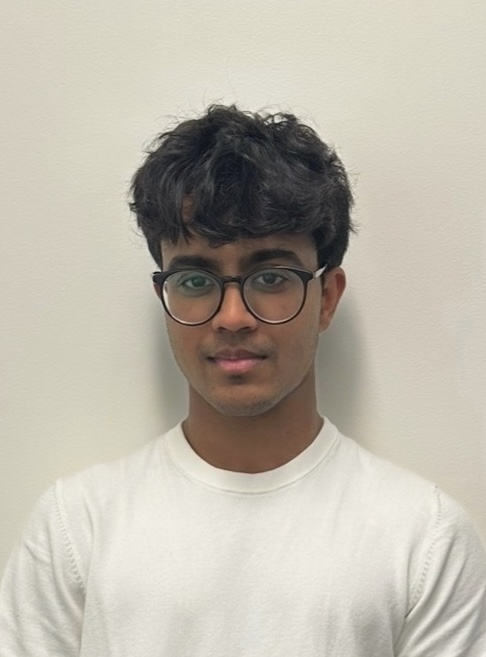

Hi, I'm Laksh Goyal — I build ML, agents, and the systems they live in.
Currently shipping ML pipelines at Inovasity and bioacoustic ML systems at the Qualcomm Institute / Engineers for Exploration. Previously LLM systems at Xyntopia.
About me
I'm a CS student at UC San Diego (minor in Cognitive Science & Business-Economics) who likes to build, break, and ship fast. My focus is at the intersection of machine learning, agentic systems, and the infrastructure that lets both run reliably in the real world.
Right now that means medical 3D wound analysis at Inovasity, bioacoustic ML pipelines at UCSD's Engineers for Exploration, and side projects spanning agentic training monitors, wildfire-risk simulators, and active-matter biology.
Off the keyboard: a lot of movies (logged on Letterboxd) and the kind of caffeine intake that should probably worry someone.

Where I've worked
- Building Python/PyTorch ML pipelines for 3D wound analysis with MedSAM2, DINOv2, and MONAI
- Generating synthetic wound datasets with ground-truth depth maps and tissue labels for pre-clinical training
- Fine-tuning depth-estimation and segmentation models to improve wound accuracy and model confidence
- Developing MAE / RMSE / IoU validation workflows on 50+ samples for pre-clinical evaluation
- Built Python ingestion + indexing pipelines for multi-terabyte acoustic datasets feeding CNN and EfficientNet training
- Increased usable audio segments by 15% via automated QC and corrupted-file filtering
- Cut preprocessing time 10% through faster batch throughput, metadata indexing, and NAS handling
- Analyzing focal-to-soundscape domain shift in bioacoustics via STFT, MFCC, PANNs, and WST
- Improved boundary accuracy 9% by adding a boundary-aware IoU metric for mangrove canopy segmentation
- Refactored evaluation into a metric registry, decoupling metrics from the training loop
- Built a 30+ stage LLM task orchestration framework in Python powering a VS Code chat extension
- Built a token-based E2E encrypted proxy server routing LLM and third-party API requests
- Implemented server-side token verification with automated credit reporting to a Supabase payment backend
- Reduced task retries 35% via validation checks and state-aware partial retries
- Improved skin-lesion classification 7% by fine-tuning MedGemma-1.5-4B-IT on a 25K+ image dataset
- Trained a CNN on HAM10000 with augmentation + preprocessing for high-accuracy lesion classification
- Shipped a cross-platform mobile app for real-time skin-lesion detection, tested on 200+ images
- Deployed lightweight TFLite/Core ML models for offline use on iOS and Android
- Led migration of website components from Webflow to React, reducing page load time 20%
- Built a membership tracker (React + Supabase) logging events and updating status for 100+ members
- Coordinated dev tasks across the team to support a more scalable platform
Selected projects
Argus — Agentic Training Monitor
Python · ReactAutonomous ML training agent (claude-sonnet-4-5) polling live JSONL every 10s to self-correct training. Dispatches ≤10 tool calls/invocation via a 12-rule system prompt, autonomously resolving 49% of detected anomalies. SPC detector across 4 failure modes (loss spike, grad explosion, plateau, overfitting) using z-score/CUSUM. Deployed on AWS EC2 with a live React dashboard.
Open-world RF Drone Detection
PythonBowCapital Defense Hackathon 2026. Signature libraries miss novel drones — we built an IsolationForest anomaly detector trained only on ambient RF that catches 100% of held-out novel emitters vs. 0% for a NearestNeighbors baseline.
view repo →AgriShield — Wildfire Risk & Firebreak Optimizer
Python · JS7-stage geospatial preprocessing pipeline (4.6K lines) turning farm polygons into 11 ELMFIRE-ready rasters on a canonical 30m EPSG:5070 grid. Runs 8-bearing fire-spread ensembles, scores 24 candidate firebreak layouts. 92 passing tests, mypy-strict clean, full Pydantic v2 validation. No-build HTML5 + Canvas UI for interactive polygon drawing.
view repo →Repomap (IBM BOB)
TypeScriptAI-powered codebase visualizer as a VS Code extension. Interactive SVG graph of your repo, two-sentence AI file summaries, and an IBM-Bob-powered chat that explains code and applies suggested edits with one click.
view repo →Internship Apply Tool
PythonAggregates postings from cvrve / SimplifyJobs feeds, filters to F-1-friendly SWE / ML / Research roles posted in the last 7 days, and auto-publishes a daily shortlist via GitHub Actions.
view repo →UrbanSound8K Classifier
JupyterCNN-free audio classification pipeline on UrbanSound8K — 72.9% top-1 / 86.8% top-2 with LightGBM under strict 10-fold CV. 487-dim feature vector blending MFCC, spectral, ZCR, chroma, tonnetz, and Wavelet Scattering Transform (Kymatio J=8, Q=12). 0.51ms inference, plus a domain-shift robustness experiment.
view repo →Tool Dependency Graph
TypeScriptBuilds a precursor-action graph over Composio's Google Super + GitHub toolkits so agents know what info to fetch (or what tool to call) before an action — e.g. list_threads → reply_to_thread. Visualized as an interactive node graph.
Outreach
TypeScriptReact + TypeScript + Vite front-end for outreach workflow automation. Private build.
view repo →T-cell Swarming · Active Matter
PythonUCSD Vibe Coding Active Matter Hackathon. 2D self-propelled-particle model of why T-cell swarms self-limit in vivo — ABP + Vicsek alignment + chemotaxis + desensitization + drift-with-memory. Interactive slider explorer with demo presets (Ring, Vortex, Rescue…).
view repo →ChainSense
JupyterBehavioral clustering of Ethereum wallets from on-chain transaction patterns — Alchemy → ETL → features → HDBSCAN/UMAP → Streamlit dashboard. Surfaces 4 stable wallet archetypes and flags anomaly signals seen before past crashes.
view repo →Project Liftoff
React · SupabaseFull-stack management system for UCSD's Startup Incubator. 6-tier RBAC via Supabase RLS across 13 relational tables. Replaced a Google Form with a multi-stage application pipeline, onboarded 100+ users, points/events engine, Resend transactional email. Live →
view repo →Tools I reach for
Languages
ML & Data
Web & Backend
Infra & Tools
Let's build something.
Open to research collabs, internships, hackathons, and weirdly specific problems. Best reached by email.